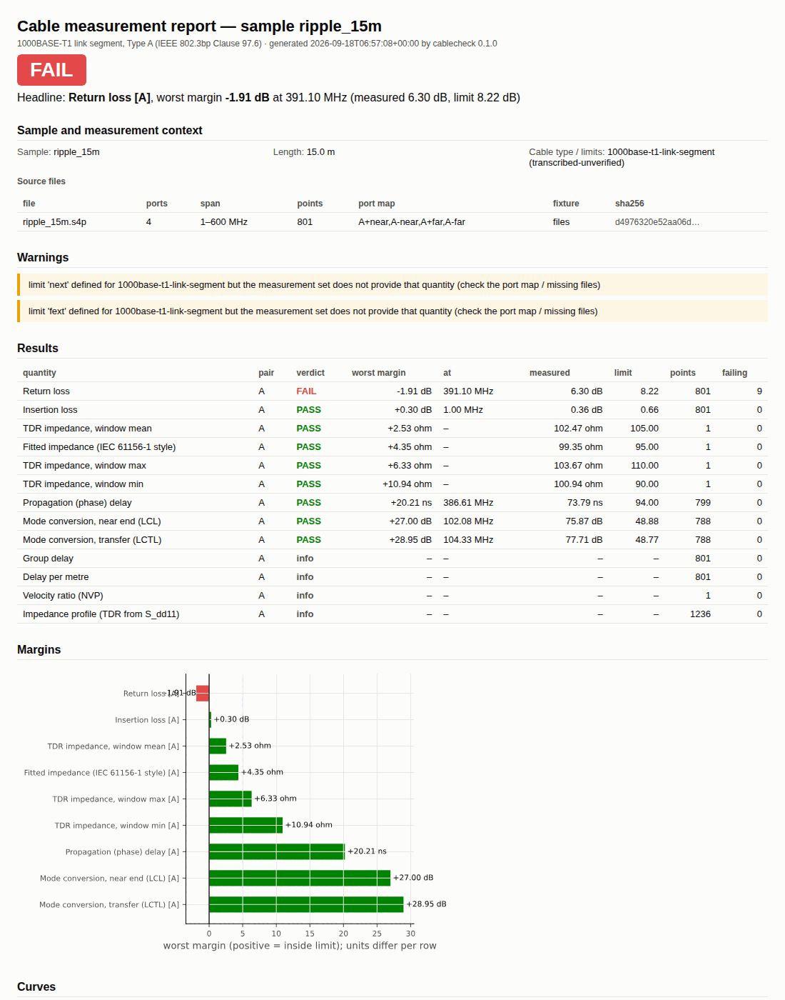
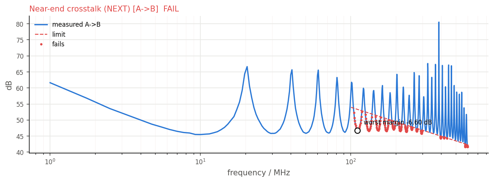

cablecheck
Turns a high-frequency cable measurement into a standards-based engineering verdict and a report.
The problem
A vector network analyser measures a cable and hands back a Touchstone file: a grid of complex scattering parameters. Between that file and the sentence an engineer actually needs — "this cable passes 1000BASE-T1 with 0.3 dB of margin, worst at 1 MHz" — sits a long chain of non-optional processing. The test fixture's own electrical behaviour is tangled into every number and must be removed. The four single-ended ports must become the differential and common modes the standards are written in. A dozen quantities must be computed, each against the right limit line, over the right frequency span, with the worst margin found and located.
Skip a step, or do one subtly wrong, and the verdict is wrong — with nothing visibly broken.
What was built
A complete measurement-analysis framework: every stage from the raw instrument file to the archived verdict, as one tested pipeline.
One command runs the whole chain; each stage is also usable on its own from Python.
Takes
- Touchstone files, 4- or 8-port, from any VNA
- A fixture description — files, a 2×-thru, or port delays
- A sample record: cable type, length, identity
- Limit sets as data files — standards included, own limits addable
Produces
- Pass or fail per quantity, with margin and worst frequency
- An HTML / PDF report and machine-readable JSON
- A results database row with full provenance
- 12+ derived quantities on the standard's grid
The hard part
The difficulty is that every stage can be silently wrong. A de-embedding that removes slightly too much fixture makes a failing cable pass. A time-domain transform that mishandles the edge at the reference plane shifts every impedance number. So the package is built around verification: networks must stay passive and reciprocal through every transform, closed-form cases must come back exact, and a frozen reference set of synthetic cables — good, lossy, rippled, unbalanced, two-pair — pins the entire pipeline's output, so any change that moves a number is caught by the test suite and must justify itself.
That reference set earned its keep: while building the impedance-profile project, the frozen numbers exposed a half-cell error in the TDR step response — the DFT wraps half of the edge at the reference plane to the end of the array — worth up to 1 Ω in the window statistics.

Checked against ground truth
Nothing in the pipeline is trusted on inspection; each stage is checked against something independent.
| What was checked | Result |
|---|---|
| Touchstone round trip | read → write → read bit-exact |
| Passivity / reciprocity through every transform | < 10⁻⁹ |
| Exact de-embedding of a known DUT | < 10⁻⁹ |
| 2×-thru bisection residual | < 0.02 dB |
| Mixed-mode vs analytic decomposition | exact for a symmetric pair |
| Frozen reference set | 5 cables, every verdict and margin pinned |


What it does not claim
From the report's own limitations section:
- The reference measurements are synthetic. They validate the pipeline's mathematics, not any manufacturer's product.
- De-embedding quality is bounded by the fixture description you provide; a wrong fixture file yields a confidently wrong DUT.
- Limit sets encode the standards' public limit lines; conformance-lab status is not claimed.
Where it sits in the toolchain
Everything else imports this package. labauto calls it on every measurement the laboratory takes; zprofile builds on its network layer; cableanalytics fits models to its quantities; labplatform derives every comparison from its traces; and linktwin hands its assembled harnesses to this evaluator — which is why a verdict on a link that does not exist yet is directly comparable to a verdict on one that does.